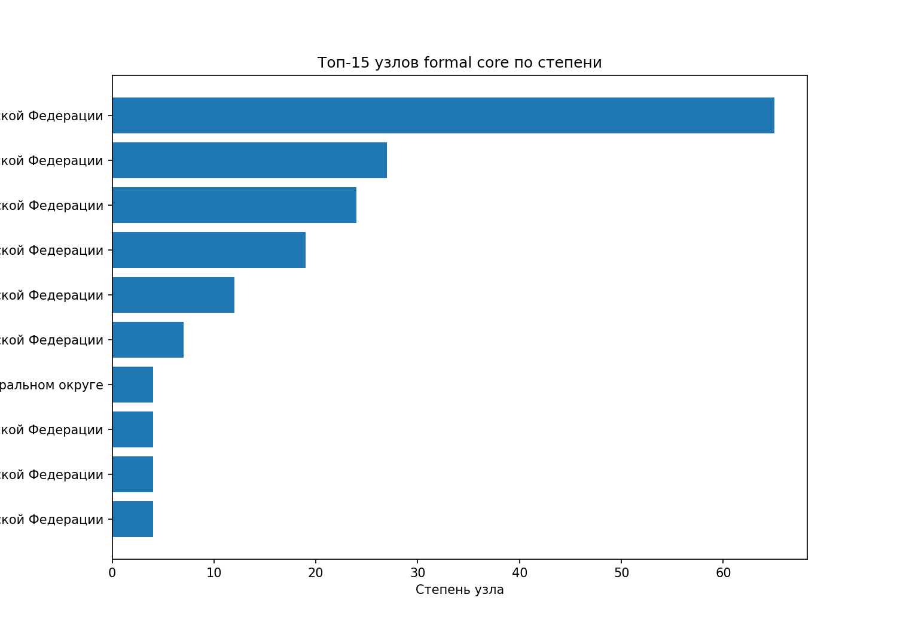
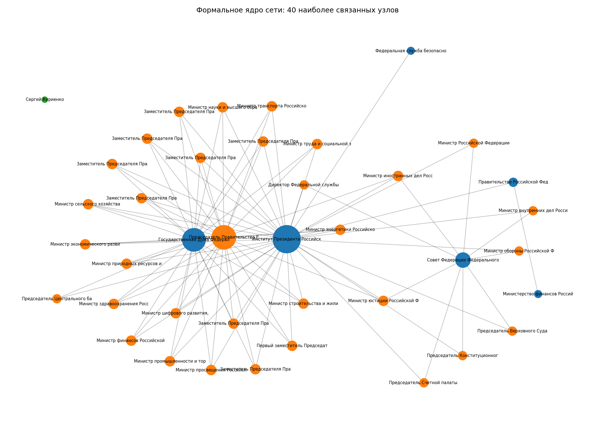

Формальные институты, кадровые связи и аналитические слои влияния
2026-06-18
Этот проект переводит исходный корпус данных, первоначально организованный в Kumu-совместимых CSV, в воспроизводимый Python-пайплайн. Итоговый результат строится не в Kumu, а собственным кодом: данные загружаются, нормализуются, частично дополняются автоматизированным сбором с официальных сайтов, после чего на их основе строятся графы, считаются сетевые метрики и создаются визуализации.
Насколько формальная структура российской власти совпадает с сетевой структурой кадровых, координационных и аналитически реконструируемых связей?
Проект использует четыре слоя данных:
Изначальные Kumu-таблицы используются только как сырой формат хранения части данных. Финальный анализ, очистка, объединение, расчёт метрик и визуализация выполняются Python-кодом.
core: 282overlay: 130comention: 110core: 448overlay: 50comention: 1422| layer | edges |
|---|---|
| comention | 1422 |
| core | 448 |
| overlay | 50 |
В проект включён отдельный модуль
src/scrape_official.py, который пытается автоматически
собрать часть формального институционального слоя с официальных сайтов.
На текущем этапе он ориентирован на страницы:
Для воспроизводимости в офлайн-среде в репозитории хранится кэшированный snapshot официального слоя. Это означает, что даже без доступа к сети можно воспроизвести структуру проекта и показать отдельный этап автоматизированного сбора данных.
| provider | entity_group | count |
|---|---|---|
| council | institution | 1 |
| council | person | 1 |
| council | position | 1 |
| duma | institution | 1 |
| duma | person | 1 |
| duma | position | 1 |
| government | person | 1 |
| government | position | 1 |
| kremlin | institution | 2 |
| kremlin | person | 2 |
| kremlin | position | 2 |
| other_official | institution | 1 |
networkx): degree centrality, betweenness centrality,
closeness centrality.official, core,
overlay и comention по размеру, типам связей и
плотности.data/raw/.data/processed/.
Диаграмма показывает, что разные слои описывают разные типы
связанности. Слой core отвечает за формальный каркас,
overlay — за аналитически реконструированные связи, а
comention — за плотность совместной видимости акторов в
источниках.
| type | count |
|---|---|
| contains | 126 |
| занимает_должность | 102 |
| контроль_надзор | 7 |
| координация | 8 |
| назначение | 118 |
| неформальное_отношение | 12 |
| подчинение | 75 |

Наиболее центральным узлом formal core выступает институт президента, что соответствует общей логике формального институционального каркаса. Далее идут узлы правительства и парламентских институтов.
| узел | тип | degree | degree_centrality | betweenness | closeness |
|---|---|---|---|---|---|
| Институт Президента Российской Федерации | organization | 65 | 0.2313 | 0.2380 | 0.3286 |
| Председатель Правительства Российской Федерации | position | 27 | 0.0961 | 0.0142 | 0.2352 |
| Государственная Дума Федерального Собрания Российской Федерации | organization | 24 | 0.0854 | 0.0090 | 0.1809 |
| Правительство Российской Федерации | organization | 19 | 0.0676 | 0.0628 | 0.2249 |
| Совет Федерации Федерального Собрания Российской Федерации | organization | 12 | 0.0427 | 0.0036 | 0.1626 |
| Федеральная служба безопасности Российской Федерации | organization | 7 | 0.0249 | 0.0219 | 0.2090 |
| Заместитель Председателя Правительства Российской Федерации | position | 4 | 0.0142 | 0.0038 | 0.2056 |
| Заместитель Председателя Правительства Российской Федерации | position | 4 | 0.0142 | 0.0038 | 0.2056 |

Этот граф показывает наиболее связанные элементы формального ядра. Он полезен как опорная карта институционального устройства, но не должен автоматически отождествляться с «реальным распределением власти»: для этого и нужен аналитический слой.
core существенно менее плотный, чем
слой comention, что ожидаемо: официальная институциональная
структура задаёт более жёсткий и ограниченный набор связей.overlay и comention не являются
полностью verified-only и должны интерпретироваться как аналитическая
реконструкция.src/ — код загрузки, построения графов, расчёта метрик,
визуализации и автосбора;scripts/ — сценарий полного запуска;data/raw/ — исходные CSV;data/processed/ — очищенные таблицы;outputs/ — таблицы результатов и готовые
визуализации;report/ — Quarto-отчёт.pip install -r requirements.txt
python scripts/run_analysis.py
quarto render report/index.qmdПроект показывает, что корпус данных, изначально организованный для Kumu, можно превратить в воспроизводимый Python-пайплайн, который включает автоматизированный сбор официальных данных, сетевой анализ, сравнение слоёв сети и кодовые визуализации. Это делает результат более академически прозрачным и лучше соответствует требованиям итогового проекта.